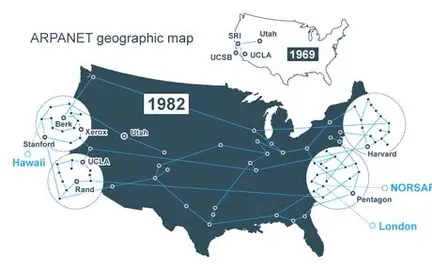

Världens första fungerande paketväxlande nätverk och en föregångare till dagens globala internet heter Advanced Research Projects Agency Network (Arpanet). Den användes till exempel för att skicka det första e-postmeddelandet.

En tjänst som heter world wide web (www) gör webbsidor och andra datafiler åtkomliga via internet eller intranät och skapades av Tim Berners-Lee den 12 mars 1989. Ett webbhotell är en samling av flera webbplatser.

Den första webbsida var World Wide Web(www) som skapades av Tim Berners-lee. www är ett system för att visa och länka mellan olika innehåll på internet.
.webp)
Den första stora webbläsaren var Mosaic som kom ut 1993. Den blev viktig för webbens utveckling för att den kombinerade text och grafik på ett användarvänligt sätt.
.webp)
Varje dator eller server på internet tilldelas ett unikt nummer (IP-adress) som fungerar som en adress som datorer använder för att skicka och ta emot information. DNS översätter domännamn till IP-adresser.
.webp)
Lysator var sveriges första hemsida och publicerades 1993. Den finns kvar idag men sidans utseende har ändrats lite. Den innehöll allt från information om lysator till ett spel som kallades mud games.
.webp)